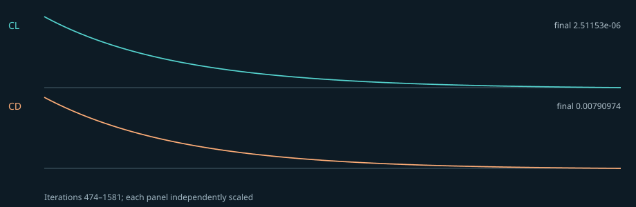

NACA 0012 · OpenFOAM tutorial run
Recorded teaching run · not NASA validation
16,200 cells
1,581 SIMPLE iterations
Mesh check: warning
CL = 0.000003
CD = 0.007910
last-50 CL spread = 18.8947%
Executed 12 September 2026 in an isolated Linux container running OpenFOAM Foundation v10. Original source: OpenFOAM Foundation v10 aerofoilNACA0012 tutorial ↗
Run setup
- NACA 0012 tutorial geometry and mesh
- rhoSimpleFoam; compressible steady k-ω SST RANS
- 250 m/s inlet speed; 0° angle of attack
- Tutorial air properties and boundary conditions
Observed solver evidence
The solver log explicitly reports convergence in 1,581 SIMPLE iterations and the matching final field directory exists in the retained local run. Numerical completion does not establish physical correctness.

Engineering gates
| Solver Completion | pass |
|---|---|
| Mesh Quality | warning |
| Grid Independence | not established |
| Independent Validation | not established |
| Design Release | blocked |
Limitations and next validation work
- checkMesh reports one failed check: 710 high-aspect-ratio cells (maximum 42,738). No negative-volume or non-orthogonality failure was reported.
- This is not the NASA TMR or AIAA DPW-6 Mach/Reynolds/angle-of-attack condition.
- No grid-independence study, experimental comparison, or Cp/Cf comparison was performed.
- Solver convergence proves numerical completion, not physical validity or design readiness.
Evidence integrity
SHA-256 hashes below refer to the linked public copies of the retained local logs and data.
| log.checkMesh | 1a0ded7ba949dc31104a99a51fcd12abe7c15ce8489ff934ed334f698480c51e |
|---|---|
| log.rhoSimpleFoam | 9de88027ca4d78c260389c434734876d45618577c76d516150d80663ad8c9997 |
| forceCoeffs.dat | 62c8c0f5fcc13ad56bf0b480db10916110335364ee723c8517c4cdaa0607db93 |
| force-history.svg | ec3e66ed00730cc733d1ea5fc44d90ddc13bb05e62db19a434b5ef6b6a1d7326 |
{kind=link}
Editing this case in Aero creates a new input revision. This document remains historical until a fresh solve produces a new proof.